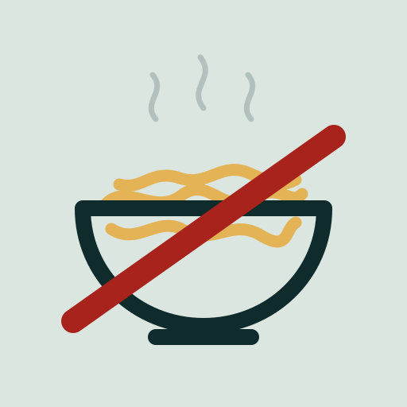

no-noodles v1.0.1 github ↗Noodling is improvised, meandering work: ad-hoc terminal probes instead of scripts, a new one-off file instead of extending the thing that already does the job, a tangent instead of the thread you were on, and handing the turn back the moment something goes green.
It feels productive. It isn't. It's how a codebase fills with untracked, unreviewable, un-rerunnable one-offs — and how one session sprawls into a dozen half-finished threads.
Scroll. The bowl sorts itself out.
The mess
The signature of noodling is the one-liner: fetch something, pipe it through a parser, eyeball the output, move on. Nothing is saved, nothing can be re-run, nothing can be reviewed. When it fails, the reflex is to write a better one-liner — which is the same probe, aimed more carefully.
Worse, that shape is indistinguishable from the real thing. A shell command that evaluates a fetch is what an attack chain looks like too, which is why endpoint security flags it.
So the guard counts repeats, not shapes. Your first probe of a kind passes — research shouldn't pay a tax. The second of the same shape is refused, because that is the moment it stopped being a one-off.
The concept
New capability belongs inside the pipeline it's part of — a flag or a function on the script that already does ninety percent of the work — not in a parallel file that duplicates it and then drifts.
So the first move is always a search, not a keystroke: what already exists, and can it be extended? A genuinely unrelated set of functions can have its own file. It just has to say why.
The hook
Two of the four rules are checkable from the shape of a single tool call. Those get hard-blocked by a PreToolUse hook, before the command runs. Not a linter you can skip, not a guideline in a document nobody opens.
The other two require reading intent across a whole turn. A shell script cannot reliably tell a genuine blocker from a lazy handback, or a real tangent from a legitimate next step — so those stay documented discipline, and the package says so instead of pretending otherwise.
The cleanup
Every rule has a way out, and each one asks for a reason rather than a click. # noodle-ok
marks a genuine one-off — if you're typing it twice, it was a script. # build-ok:
takes a written justification, so the next reader sees what you checked before adding the file.
Enforcement is configurable per project or globally, either rule independently, because a repo full of throwaway analysis notebooks is not the repo that runs your deployments. A weighted risk gate scores commands beyond the two blanket rules.
Aligned
None of this makes an agent smarter. It makes its output predictable: work lands in the structure that already exists, one thread at a time, with a real reason attached and a test in front of it.
That's the whole pitch. The noodles go in rows.
Idempotent — re-running never duplicates hook
registrations. Both hooks are on by default. Skills register at session start, so open a new session
before /no-noodle resolves.